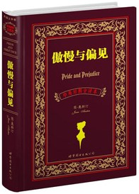

好书推荐
推荐榜单
Tenacity 2017-03-17《傲慢与偏见》是英国著名女性小说家简·奥斯汀的经典代表作，是一部描写爱情与婚姻的经典小说，在英国小说发展史上有着重要的地位和意义。傲慢与偏见都不是好的性格品质，在这部男主人公达西傲慢，女主人公伊丽莎白存在偏见的小说故事里，男主和女主究竟是怎样克服重重困难，挣脱傲慢与偏见的束缚，最终“有情人终成眷属”的呢？
《傲慢与偏见》是英国女作家简·奥斯汀早期创作的经典文学作品。简·奥斯汀，于1775年12月16日出生在英国斯蒂文顿小镇的一个牧师家庭里，一家人过着小康、祥和的乡居生活。简成长在恬静、舒适的生活环境中，所以她的作品并没有触及到重大的社会茅盾，而是更多的关注乡绅家庭女性的婚姻和生活。由于她为爱而婚的婚姻观和一段浪漫却无果的爱情经历，简·奥斯汀终身未婚，而把所有未了的情感注入到文学创作中。她以细致入微的观察力和活泼风趣的文字著作了一部部经典的爱情小说，主要有《理智与情感》、《傲慢与偏见》、《曼斯菲尔德庄园》和《爱玛》等。她的文学作品在英国小说发展史上有着承上启下的意义，她也被誉为“可与莎士比亚平起平坐”的作家。1817年7月18日，简·奥斯汀与世长辞，享年42岁。
《傲慢与偏见》是简·奥斯汀于1813年发表的第二部著名小说，也是最受欢迎的一部。作品通过描写男主角达西和女主角伊丽莎白之间因为傲慢与偏见而产生的爱情纠葛和其他三对配角的婚姻故事，表现了当时社会人们对待婚姻的庸俗和愚昧的态度，反映了作者不为金钱而结婚，不把婚姻当儿戏，只为爱情而结婚的婚姻观，也反映了女性对人格独立和平等权利的追求，更反映了18世纪末到19世纪初处于保守和闭塞状态下的英国乡镇生活和世态人情。
《傲慢与偏见》中的伊丽莎白聪敏机智，有胆识，有远见，有自尊心，却对达西先生充满偏见；达西是个“高富帅”，风度翩翩，却又偏偏骄傲无比。这两个人的爱情之路曲折迂回，深深地吸引了读者们的眼球。两百年的时间，依然没有抹掉《傲慢与偏见》的风采与魅力，时至今日，它仍给读者们带来独特的艺术享受。
英国著名小说家毛姆说：“使一部作品成为经典名著的，不是评论家们的交口赞誉、教授们的阐述研究、用作学校里的教科书，而是使一代又一代的众多读者在阅读这部作品中得到的愉悦，受到启迪，深受教益。我个人认为，《傲慢与偏见》总体来说，是所有小说中最令人满意的一部作品。”
如果我们要远离傲慢与偏见，就必须先品读英国最伟大、最经典、最受欢迎的小说之一——简·奥斯汀的《傲慢与偏见》，因为它会使我们深受启迪，收获多多。